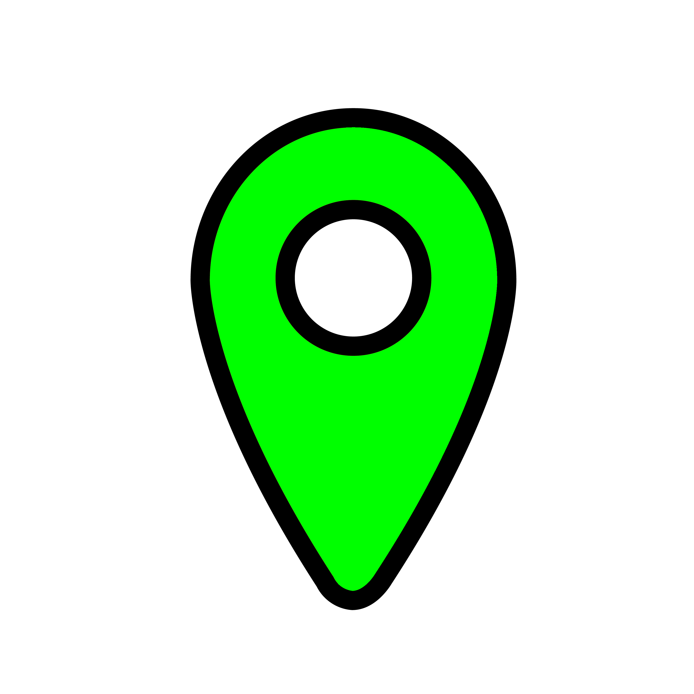
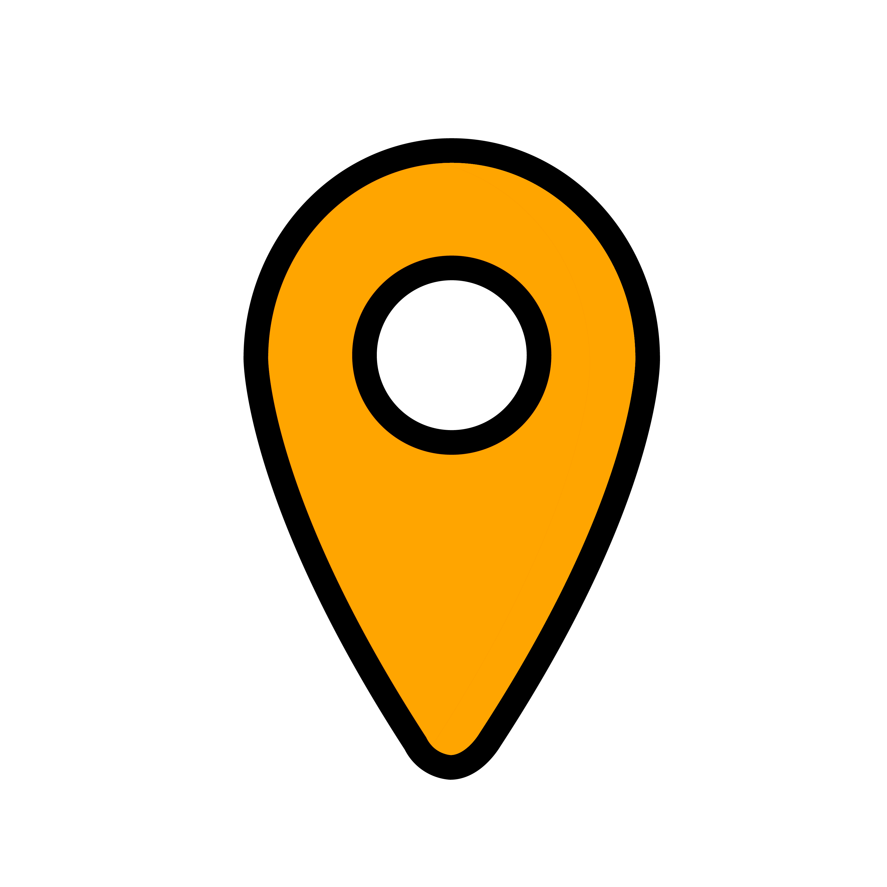

Indique que la station a à la fois des vélos mécaniques et électriques disponibles.

Indique que la station a au moins un type de vélo disponible, qu'il soit mécanique ou électrique.
Indique que la station n'a ni vélos mécaniques ni vélos électriques disponibles.
Rechercher
Top 5 villes par nombre de vélos :
{% for ville, velos in top_villes %}
{{ ville.capitalize() }}
-
{{ velos }}
vélos
{% endfor %}
Pourcentages de vélos mécaniques vs électriques :
{% for ville, pourcentage in pourcentages_velos.items() %}
{{ ville.capitalize() }}
- {{ pourcentage["pourcentage_mecaniques"] }}% mécaniques, {{ pourcentage["pourcentage_electriques"] }}% électriques
{% endfor %}